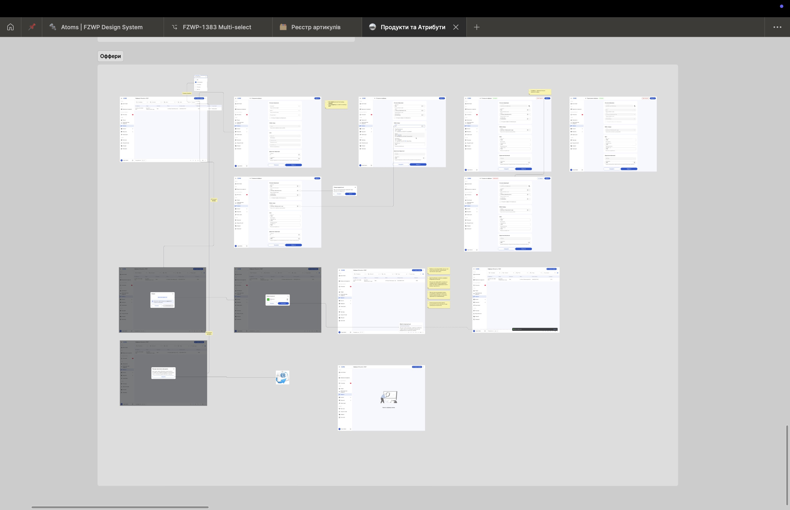

Silpo ERM — a 9-module enterprise platform.
A centralised ERM system for Ukraine’s top-5 retailer, covering everything from order administration and supplier collaboration to logistics, loyalty and promotion management — nine modules, dozens of stakeholders, one consistent interface language.
One platform for an entire retailer.
Silpo is part of Fozzy Group — Ukraine’s 5th largest private company and operator of 830+ stores. The internal e-commerce operations had grown across multiple tools and teams: marketers ran promotions in one place, accountants reconciled in another, couriers worked in a third, and BAs spent their week translating between them.
The ERM was meant to unify all of that — order administration, supplier collaboration, logistics, promotions, loyalty — into a single platform with a coherent interface language across nine business modules.
Scenario maps and atomic design, plus a lot of listening.
My input started after the business analysts and product owners identified what to optimise — I took their requirements and translated them into something operators actually wanted to use. The toolkit was familiar but the scale was unusual.
- Stakeholder & user researchInterviews and surveys with managers and frontline employees across departments. Usability tests on prototypes.
- Competitor analysisShopify, Etsy, Odoo — for IA patterns, dashboard density and admin-tool conventions.
- Scenario mapsUsed to structure each business process into navigable flows before any pixels.
- Atomic design systemShared UI kit applied across nine modules — standardised components, faster delivery for engineering.
- Cross-functional ritualsWeekly syncs across teams, Jira + Confluence + Slack as the source of truth, Scrum cadence.
Nine modules, one interface language.
- E-commerceOrders (CRUD + status tracking) and promotions (campaign tooling for marketers).
- GEOAddress inquiries and delivery accuracy tooling.
- BillingAccounting automation, invoicing, payment monitoring.
- COREProduct catalog, characteristics, services per branch, users.
- PaymentsTransactions with merchants, business operations.
- LoyaltyPartner programmes, B2B participation, operations.
- CityRyderCourier management, routing, monitoring, geozonal planning, compensation engine.
- DAMSInventory transfers, expiration monitoring, KPI panels and staff schedules.
- ProfileEmployees and role-based access.
On top of the module work, I co-led the design system that all nine modules used — and I acted as the mediator between designers, engineering, QA, PO and BA when conflicts came up.

A 34% drop in operational errors — and four moving KPIs.
The headline result was the error reduction, but four secondary KPIs moved in the right direction as well.
- CR — Conversion RateOrder conversion up after checkout optimisation.
- TAT — Turnaround TimeOrder processing time down through automation.
- ABR — Abandonment RateDrop-offs reduced via UX improvements.
- NPSCustomer loyalty score up.
Five things I would tell my Day-1 self.
- Cross-team communication is the projectWhen nine modules touch five departments, alignment is the deliverable.
- Plan flexibly, ship iterativelyA multi-stage rollout will get re-prioritised. Build the rhythm to adapt.
- Test on prototypes, not on prodCatching IA issues in interactive prototypes is a 10× cheaper bug fix.
- Train the operatorsAdoption is part of the design. Without sessions and support, no UX redesign sticks.
- Make feedback an instrumentCollect, route, close the loop. Otherwise it dissipates.